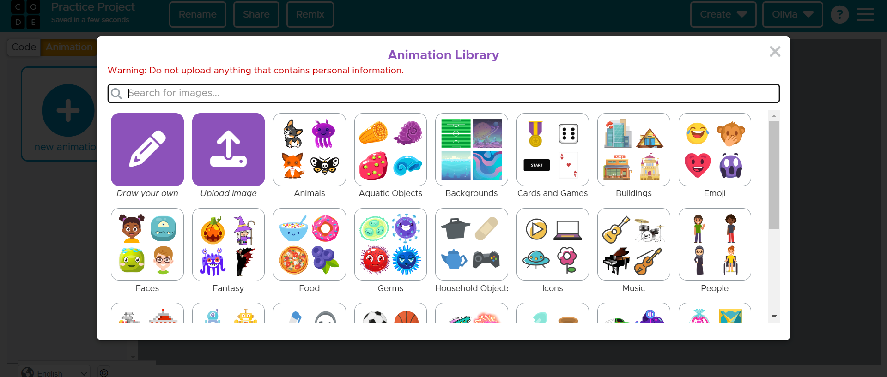

What You Should Know - Code.org: Create an Animation
 Important Vocabulary
Important Vocabulary
- Sprite - a character in code.org that can be used in a story, animation or games
- Variable - used in computer coding to store information that can be accessed later –this information can be numbers or words.
- Animation - pictures or objects that appear to be moving
- Debug - finding and correcting errors in computer programs
- Command - an instruction given by a programmer to a computer or program that tells it to do something
- Velocity - direction of movement of an object
Create a New Project
To create a new project in Code.org follow these steps:
- When you login to Code.org it will take you to your dashboard.
- Scroll down until you see GameLab and click on the picture.

- Rename your new project by clicking Rename in the top left corner.
- Type in your project’s name and click save.
Function draw() {
When you create a new project in GameLab the function draw (){ block is automatically included in the workspace.
Any code that is contained in this block is run continuously until the program is stopped. This block is perfect for animations. Code contained within this block is redrawn over and over. Therefore, any code that you want to continuously run needs to be contained within this block. If you accidentally delete this block or need to find it, you can click on the “world” option within your toolbox and it is the top block.
NOTE: The code contained within this block will be continuously drawn, but it is not necessary that all code be inside this block. For example, if you set a sprite’s velocity within this block, it will be set repeatedly and will never change direction.
Create a Background
The default color for backgrounds in GameLab is white. If you would like to change the background, then you must code your program to draw a different colored background. You can do this by using a “background” block. To find this block you will select the blue “drawing” options from your toolbox.
Then select and drag the background block to the workspace. You can type the lowercase name of a color inside. To find the full list of colors available you can use the W3 Schools Color Webpage.
Variables
Variables are used in computer coding to save information that can be used later in your program. You can think of them as names for information. Variables can hold both numbers and words. They can make it much easier to write code if you must edit a certain part of your code several times throughout your program. For example, if you were writing computer code for a video game and you needed to program the character then you would most likely create a variable for your character with its name so that you could edit it easily as you are writing code. In computer programming the phrase “declare a variable” is a command that tells the computer to create a variable. To declare a variable in GameLab you must first select the purple Variables option in the toolbox.
You can then select one of the declare a variable blocks.

Once you declare a variable, the computer learns it and you can use it in your program.
Create a Sprite
Sprites are characters such as animals or objects that can be used in GameLab. GameLab has pre-drawn animations that can be used as sprites, or you can draw or upload your own. To find or create a sprite use the following steps:
- Click on the Animation button.
- Click the new animation button.
- Use the Animation Library to search for a new animation, browse the different categories, or draw or upload your own.
 - Once you have your animation chosen or drawn, you can rename it.
Now that you have your sprites ready, you can use them in your program! Follow these steps to code your sprite:
- Let the program know the sprites exist by declaring them in a variable. Click the red Sprites option in your toolbox and find the block to declare a sprite variable. This block not only lets the program know about your sprite, but it also commands the computer to create it at specific coordinates on the grid.
- Change the name of your sprite variable so that you can easily refer to it again throughout your program. To do this just type in the box behind “var”.
- Change the position that the sprite is created by editing the (x, y) coordinates behind Create Sprite.
HINT: You can toggle the grid to be on if you need help figuring out where to place your sprite. - If your sprite is too big, try changing the scale of your sprite using the “sprite.scale.”
or use the “sprite.height” and “sprite.width” blocks.
If you scroll through the sprite blocks options, you will see there are a lot of different ways that you can edit your sprite. Feel free to experiment with the different ones to learn about what they do and how they are used.
Lastly, you must use a “drawsprites” command block so that the computer will actually draw them. To find this command block go to the “world” options in your toolbox and drag the “drawsprites” command to your workspace.
Animate a Sprite
Animation is just making it look like the sprite is moving. In future projects, you will learn how to make your sprite do many different movements including following the arrow keys or the mouse. Velocity is how fast an object moves in a given direction. The sprite can move along the grid on the x and y coordinates. Therefore, you can use the sprite.setVelocity block to code your sprite to move along the x and y coordinate at a specific speed in those directions. The higher the number, the farther along the axis the sprite will move per frame. For example, if you set the velocity for x to be 10 and y to be 20, the sprite will move up 10 and right 20 per frame. The higher these numbers, the faster it will look like your sprite is moving because it is moving further in the directions per frame.
Since velocity is the speed that the sprite is moving on the x and y axis, when you set it, the sprite will just move in those directions until it goes off the grid and you can no longer see it. This is because the sprite is not programmed to “bounce” off the sides of the grid and the grid is not automatically programmed to be bounced off of. To keep your sprite from just flying off the grid when it is moving, you must code your program to recognize the edges as a sprite and to have your sprite “bounce” off of them when they interact with one another. Follow these steps to achieve this:
- Click on the red Sprites option in your toolbox.
- Select the createEdgeSprites() block and drag it to your workspace.
- Select the Sprite.bounceoff(target) block and drag it to your workspace.
- Edit the Sprite.bounceoff(target) block with the target being “edges” and “sprite” is your sprite’s name
If this is done correctly, when you run your program, it will look like your sprite is bouncing off the edges of the grid.
Debugging
Debugging is an extremely important part of writing a computer program. This is the process of finding “bugs” or mistakes in code that are affecting how your program runs or causes it to run incorrectly. Sometimes the application that you are using to code will point out bugs in your program when you try to run it because it is unable to run it with the current code. In GameLab, it will notify you that it cannot run the program due to an error in the code by putting a red square beside the block of code that is the problem. It will also notify you in the debug console of where and what it thinks the issue is.
Sometimes there is no direct error in the way the code is written, and the program will execute, but it does not run the way that you expected. Perhaps the color of the background is off, or the sprite is supposed to be moving and it isn’t, or the sprite is the wrong animation. These are “bugs” in the code that you, the programmer, must find and fix in the code. There will be times when you must figure out the issue by using your problem-solving skills. Study your code and try to figure out where the errors are happening. This may mean you must try changing different parts of your code and re-running your program multiple times before you figure it out. This is a normal part of programming! There are times when real life programmers debug a program for months before they figure out what is wrong with it. There are a few ways that programmers debug programs:
- Read all error messages
- Re-read/study the code and try to find simple mistakes
- Talk to another programmer/have another programmer look at the code
- Google the problem
- Test different solutions
Career Connection and Real-World Application
Computer Programmer
A computer programmer is someone who writes programs or software for computers. They use different types of programming languages such as python, java, or javascript to write instructions, or code, for computers. This code tells computers what to do so that the users can use the software or programs. Programmers are needed in almost every single job and field due to the rise of technology in our lives.

Video Game Artist
A video game artist is an artist that develops art specifically for video games. They talk with the video game creators to figure out their “vision” for the game and then design it accordingly. This can be 2D or 3D art depending on the game. This is a very important job because art can affect the feeling, mood, and overall ambiance of the video game. The artist works hand in hand with the creator to ensure that the art meets their expectations.
Computer Graphics Animator
A computer graphics animator uses computers to create sequences of images to give the illusion of movement. If you have ever heard of CGI, computer graphics imagery, that is created by a computer graphics animator. Computer graphics animators work in fields including art, video games, tv, etc. They use software combined with their artistic skills to create these animations. They can create both realistic and fake animations depending on the project.